PromiseHub · Video 80
Report, export and import learning data
Cohort, youth and staff reports, the progress board, exports of exactly what they show, and an import that places and invites
Cohort, youth and staff reports, the progress board, exports of exactly what they show, and an import that places and invites
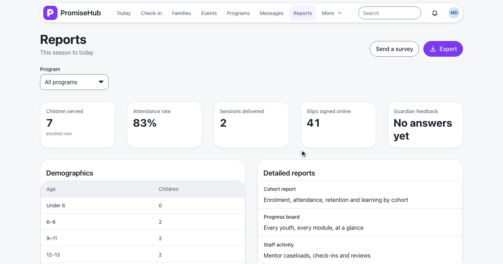
Cohort report always · Progress board while Learning is on · Staff activity while Mentoring is on · ADR 0074
From Detailed reports to Nadia’s youth report.
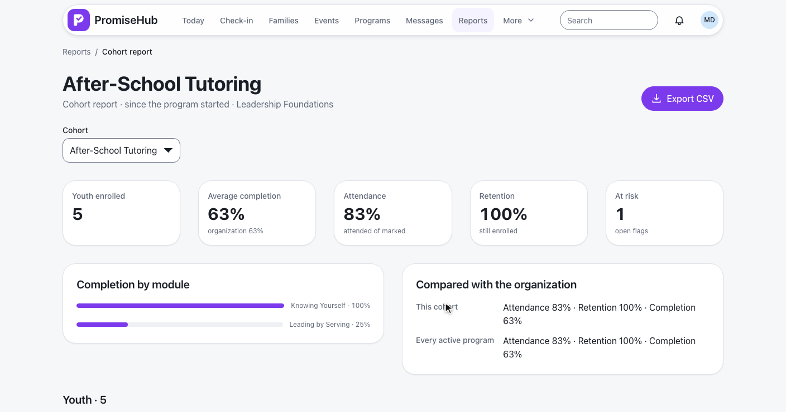
GET /reports/cohorts/{programId} · DetailedReportsHandler.CohortAsync · L2-127
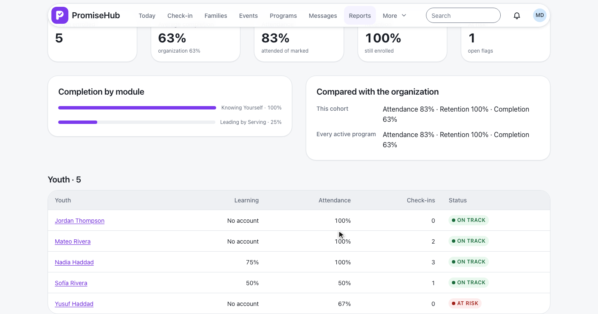
No account, not zero · check-ins since the program started · computed on read
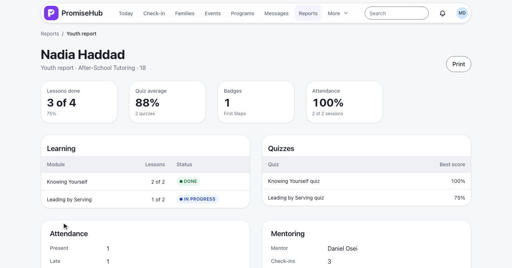
GET /reports/youth/{childId} · best quiz scores · check-ins counted, never quoted (ADR 0061)
Every youth, every module; export; staff activity.

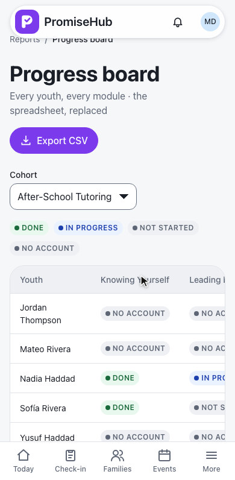
GET /reports/progress/{programId} · Learning only · PhTable footer row · L2-131
The cohort report, and the board scrolling in its own frame.
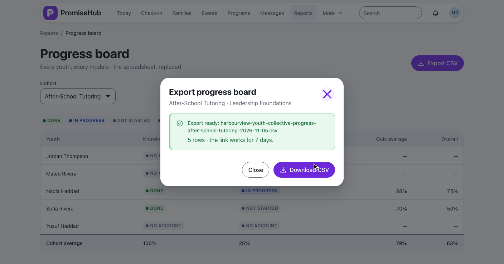
POST /reports/exports { kind: Cohort | Progress | Staff } · 7 days, then 410 · audited with the kind · L2-129
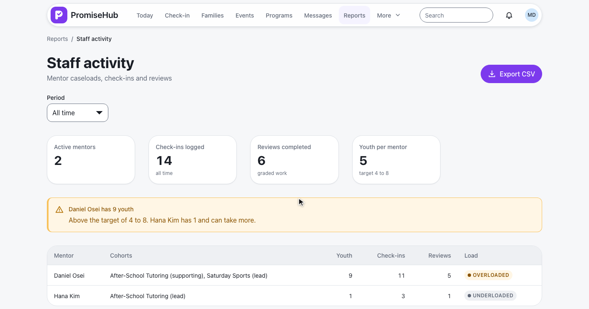
GET /reports/staff?days=30|90 · Mentoring only · Overloaded above 8, Underloaded below 4 · L2-128
Group and Youth email columns.
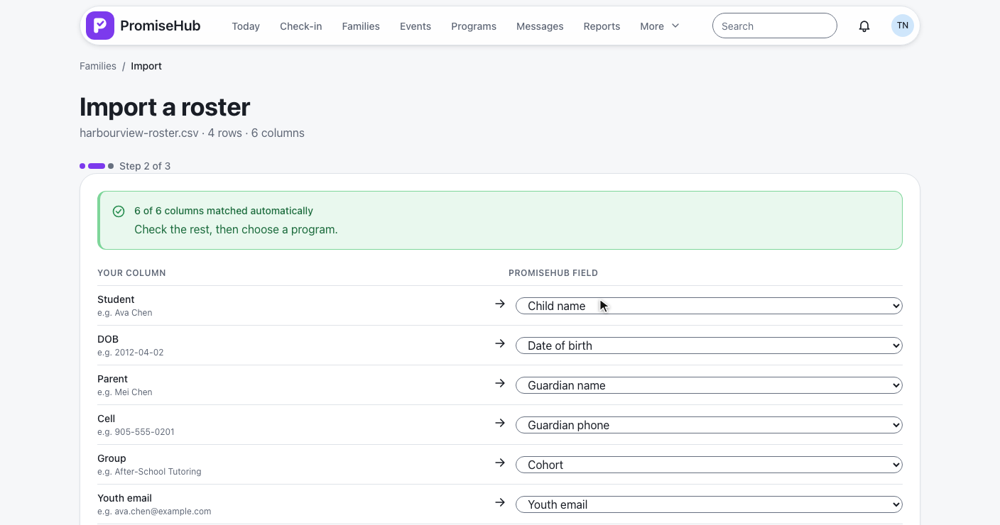
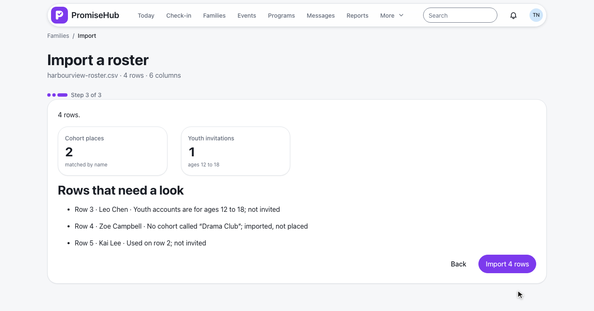
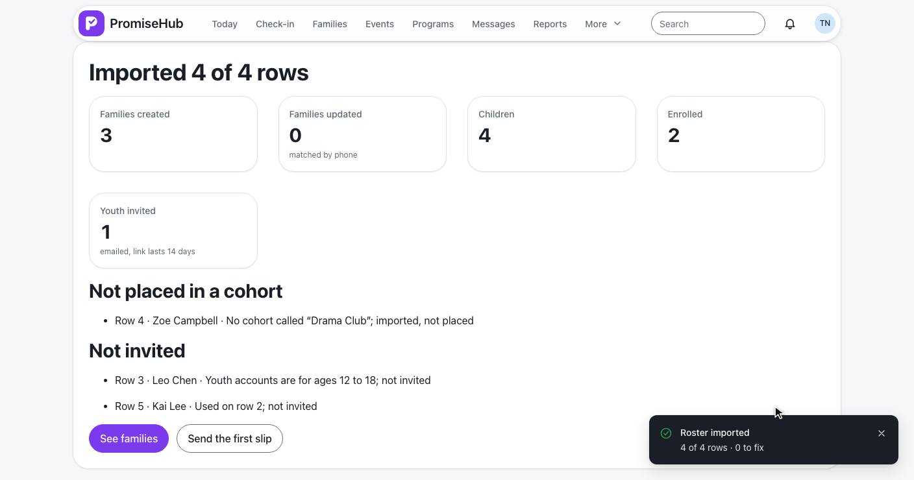
ImportField.Cohort, ImportField.YouthEmail · InvitationIssuer · idempotent · L2-130
ViewReports: admins, program directors, site leads; others 403ManageStaff), else 422Northgate, Aisha, Winter Camp, a failed load.
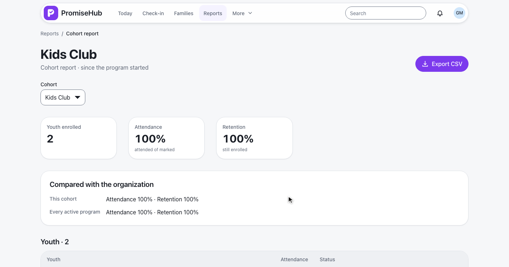
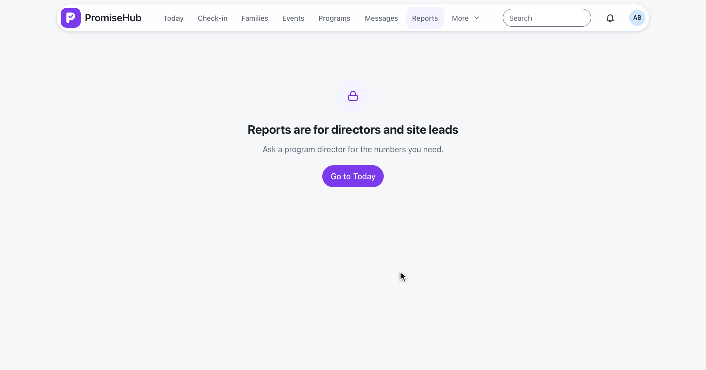
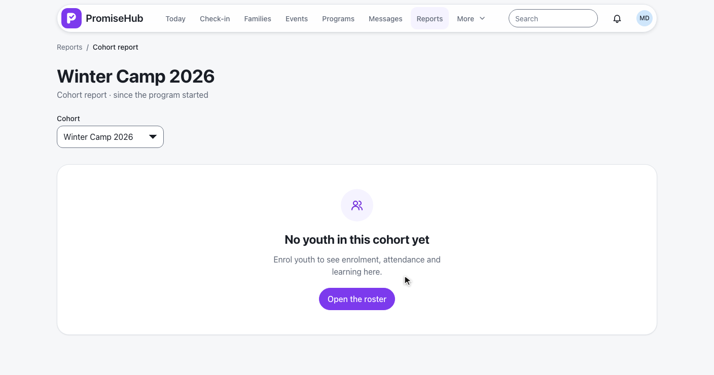
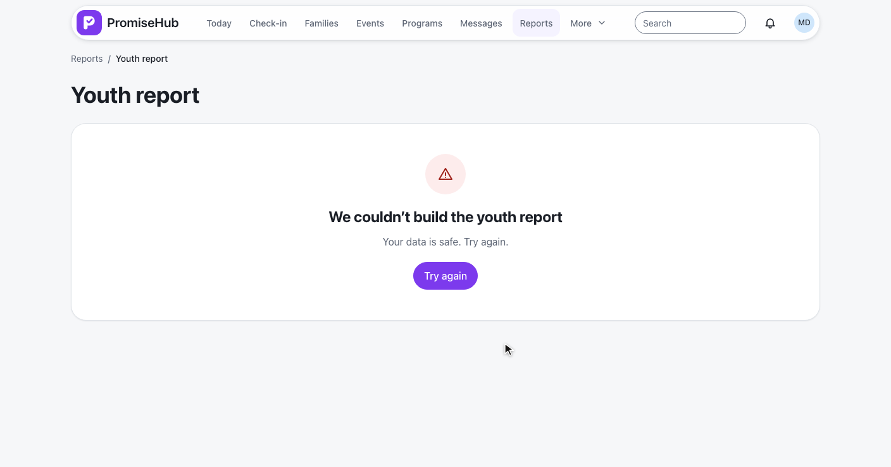
CohortReportTests, YouthReportTests, StaffReportTests, ProgressBoardTests: numbers, gates, roles, tenancyFilteredExportTests, ImportCohortsTests: columns, audit, invitations, re-runscohort-report, youth-report, staff-report, progress-board, import-cohorts specs with axe, laptop and phone
Next: the public website